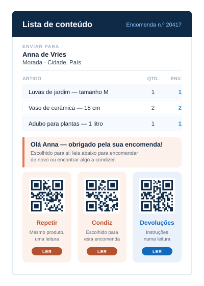

1nShift Transsmart
Expede com o nShift Transsmart
A etiqueta A5 Print & Ship está integrada no nShift Transsmart. Imprima-a a partir do Transsmart, como já pode fazer hoje.
- Software a comprar
- Nenhum
- O que encomenda
- A etiqueta
Uma etiqueta A5 Print & Ship sustentável que funde a sua etiqueta de envio e a lista de conteúdo numa só — reduzindo o tempo de embalagem em quase 80%.
A etiqueta A5 Print & Ship
Base: uma rotina de cinco passos de cerca de 45 segundos por encomenda, reduzida para cerca de 10 segundos. Os resultados variam com a disposição da bancada e o volume.
Um documento A5 impresso em duplex transporta a etiqueta de envio na frente e a lista de conteúdo no verso — transformando a habitual rotina de etiquetagem de cinco passos em dois: imprimir o único documento, depois destacar e aplicar. Menos passos, menos envios trocados e mais caixas a sair.
Imprima na bancada de embalagem — ou faça o picking com ela
Pronta para a transportadora e legível por scanner.

Integrada — sem lista de conteúdo separada.


A sua lista de conteúdo é criada para cada encomenda — pelo nShift Transsmart ou pelo seu próprio sistema — por isso pode levar uma mensagem pessoal e códigos QR. Configure uma vez, e cada encomenda leva a sua.
Sem folhetos, sem encartes, sem passos de impressão extra. A mensagem segue na folha que já vai colada em cada caixa.
Marketing one-to-one
A lista de conteúdo é impressa para cada encomenda, por isso pode falar com esse cliente em concreto. O seu cliente abre a caixa, confirma o que chegou, gosta do que vê — e o código QR na lista de conteúdo permite-lhe agir logo ali, antes mesmo de dobrar a caixa.
Uma leitura leva o seu cliente diretamente ao produto que acabou de receber, pronto a encomendar de novo.
Ligue o código QR a um produto que condiz com esta encomenda — a recarga, o acessório, o tamanho seguinte.
Um código QR para as suas instruções de devolução responde à pergunta antes de se tornar uma chamada para o apoio ao cliente.
A funcionar hoje mesmo
Já expede com o nShift Transsmart? A etiqueta está integrada — imprima-a ainda hoje. Usa outro WMS, ERP ou sistema de expedição? Descarregue o PIM gratuitamente e imprima-a a partir dos PDFs de etiquetas que o seu sistema já guarda. Em ambos os casos não há software para comprar — encomenda apenas a etiqueta.
1nShift Transsmart
A etiqueta A5 Print & Ship está integrada no nShift Transsmart. Imprima-a a partir do Transsmart, como já pode fazer hoje.
2PIM
Se o seu sistema guarda a etiqueta e a lista de conteúdo como ficheiros PDF, descarregue o PIM gratuitamente e aponte-o para esses PDFs. O PIM nunca se liga ao seu WMS ou ERP, não o lê nem o altera. Recolhe os PDFs de etiquetas que o seu sistema já produz.
PIM · Transferência gratuita
Sem projeto de integração e sem esperar por programadores. Descarregue o PIM, obtenha o aval da sua equipa de TI e imprima as expedições do dia na etiqueta A5.
Opção 1 · Em parceria com nShift
A etiqueta A5 Print & Ship está integrada diretamente no nShift Transsmart — a solução multitransportadora de gestão de envios da nShift, onde consta entre as funcionalidades do próprio Transsmart. Não há um sistema separado para aprender — gera a etiqueta no nShift Transsmart e imprime-a numa impressora laser duplex comum.
É tudo o que precisa para começar a usar a etiqueta A5 Print & Ship. Nada mais para comprar.
Opção 2 · configurador PIM
Se o seu sistema guarda a etiqueta e a lista de conteúdo como ficheiros PDF, o PIM imprime a partir deles a etiqueta A5 Print & Ship. O PIM nunca se liga ao seu WMS ou ERP, não o lê nem o altera. Recolhe os PDFs de etiquetas que o seu sistema já produz.
É tudo o que precisa para começar a usar a etiqueta A5 Print & Ship. Nada mais para comprar — encomenda apenas a etiqueta.
Porquê a Pinnpoint
Embalagem mais rápida, sem dependência de impressora e materiais que poupam o planeta.
Imprima-a a partir do nShift Transsmart, ou descarregue o PIM gratuitamente e imprima-a a partir dos PDFs de etiquetas que o seu sistema já produz. Sem software para comprar.
Imprima na impressora laser duplex que já tem — sem dependência.
Feita com papéis certificados FSC, e é plantada uma árvore por cada caixa de etiquetas vendida, através da One Tree Planted.
Experimente na sua própria impressora
Duas formas gratuitas de testar a etiqueta A5 Print & Ship na impressora laser duplex que já tem.
Uma etiqueta de demonstração impressa e cinco folhas de amostra, para ver e sentir o produto em primeira mão.
Pedir um pacote de amostrasUma série de 50 folhas para configurar e testar de ponta a ponta na sua própria impressora laser duplex, a partir do nShift Transsmart ou do PIM.
Encomendar 50 folhas de teste
Sustentabilidade
Cada etiqueta A5 é feita com papéis certificados FSC. Associámo-nos à One Tree Planted para plantar uma árvore por cada caixa de etiquetas vendida — e ao combinar a etiqueta e a lista de conteúdo, eliminamos por completo a bolsa de plástico descartável.
Comprovada nos Países Baixos
Um retalhista de jardim e animais com loja online e mais de 160 lojas, e um grupo distribuidor — ambos nos Países Baixos, ambos a usar o nShift Transsmart com a etiqueta A5 Print & Ship.
Com o disparo das encomendas online, a Welkoop condensou uma rotina de dois documentos e bolsa de plástico numa única etiqueta A5 Print & Ship — impressa diretamente a partir do nShift Transsmart que a equipa já utilizava.
«Fundir a etiqueta de envio e a lista de conteúdo num único documento simplificou a bancada e permitiu-nos eliminar de vez os envelopes de plástico descartáveis das nossas encomendas.»
Expede com o nShift Transsmart? Peça amostras e imprima a etiqueta a partir do Transsmart. Usa outro sistema? Descarregue o PIM gratuitamente e imprima-a a partir dos seus PDFs de etiquetas.